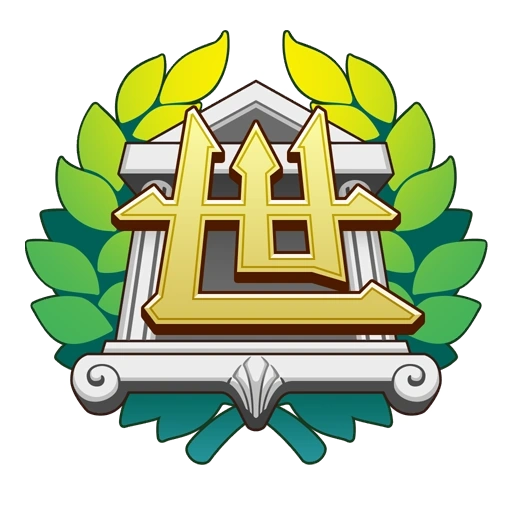

Trois têtes, une seule obsession : la victoire. Je postule pour prendre le banc de l'équipe Zeus et en faire une forteresse que personne ne franchit.
76561199015359829STEAM_0:1:527547050Personne à l'Institut Zeus ne connaît vraiment le passé de Valian. On raconte qu'il a grandi au bord du terrain, à regarder les matchs depuis les grillages, à noter dans des carnets usés chaque déplacement, chaque erreur, chaque faiblesse. Là où les autres voyaient un match, lui voyait déjà un plan.
Issu d'un quartier où le football de rue était la seule échappatoire, Valian n'a jamais eu le talent physique des grands joueurs. Trop lent, trop frêle, il était toujours le dernier choisi. Plutôt que d'abandonner, il a décidé de gagner autrement : avec sa tête. Il s'est mis à étudier les équipes, à dessiner des schémas sur des bouts de papier, à prédire les actions avant qu'elles n'arrivent.
Un jour, une petite équipe de quartier sur le point d'être reléguée l'a laissé diriger un match par défi. Avec des joueurs moyens et un plan implacable, elle a battu le favori du tournoi. Ce soir-là, Valian a compris que sa place n'était pas sur le terrain, mais au bord, là où l'on décide de tout.
On l'a surnommé Cerbère quand il a commencé à diriger des entraînements officieux : trois exercices en même temps, trois groupes surveillés d'un seul regard, et pas un joueur qui puisse relâcher son effort sans qu'il le remarque. Comme le chien des Enfers, il garde les portes. Rien n'entre, rien ne sort sans sa permission.
Son arrivée dans l'entourage de l'Institut Zeus n'est pas due au hasard. Ses carnets, remplis d'analyses sur des dizaines d'équipes, ont fini par circuler jusqu'aux couloirs de l'établissement. Certains le trouvent inquiétant, d'autres le considèrent comme un génie. Lui ne cherche ni l'un ni l'autre : il veut seulement une équipe à la hauteur de ses plans.
Ses méthodes sont dures. Il impose des entraînements à l'aube, sanctionne le moindre relâchement et ne félicite presque jamais. Mais ceux qui ont joué sous ses ordres le savent : quand Cerbère hoche la tête après un match, c'est qu'ils ont été parfaits.
Derrière la dureté, Cerbère protège farouchement les siens. Il pousse ses joueurs au bout d'eux-mêmes parce qu'il croit qu'ils méritent d'être des dieux sur le terrain, et il sera le premier à se dresser devant quiconque s'en prend à son équipe.
« Un dieu ne doute pas. Il frappe, et le monde s'adapte. »
Schéma de base en 4-4-2 : bloc compact, pressing déclenché par les milieux, appels en profondeur des attaquants. Le coach ajuste depuis la ligne de touche.
Philosophie : discipline absolue, pressing haut, défense infranchissable. Chaque match est préparé en étudiant l'adversaire.
— James